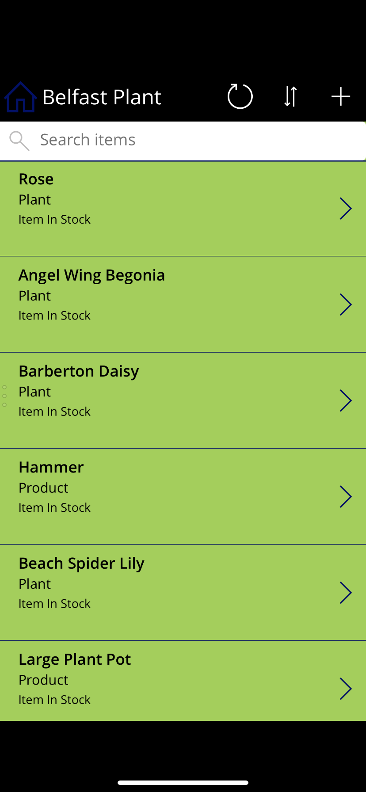

Intro
I have a definite hunger for IT with the drive to learn new skills with the ability to work as part of a team or individually to meet goals and deadlines. I am a very organized person with the motto of work hard and see the rewards. With experience in hardware and keeping systems running with pervious valuable experience, giving me access to real life working environments and knowledge on how to manage workloads. I am aware of managing my own work, being professional and reaching goals.
Work

I put all my effort into learning new environments and give all my knowledge learned so far with Software Testing (Black Box and White Box), Web Technology (ASP.NET) C#, JavaScript,HTML5, CSS, DB design and development (SQL), Systems Analysis and Design including Agile methodologies, Secure Programming (C++) and time into work but to not only have fun and enjoy creating new products.
I have completed my own projects including web design with the purpose of displaying API’s and mobile applications through Power Apps. This image above shows my latest project which showed products from a garden center (Belfast Plant) which I created for my assignment. The purpose was to create a more functional and timesaving feature to improve staff accessibilty to store products and information which included prices, description and stock control.
About Me
I am a very hard worker with good communication and listening skills, who works effectively in a team which has the ability to meet deadlines. I am a people person looking for a new challenge where I can use my skills and further develop my career. In my spare time I also love Photography, taking photos and traveling. I'm an adventurous person, always looking for new opportunities and excited for my career.